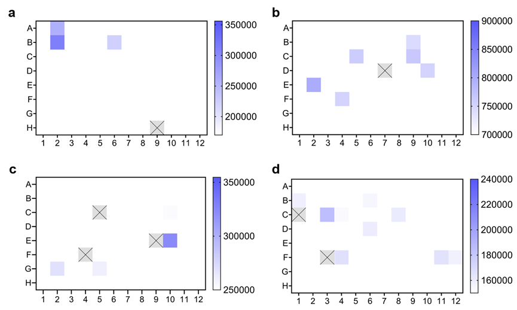
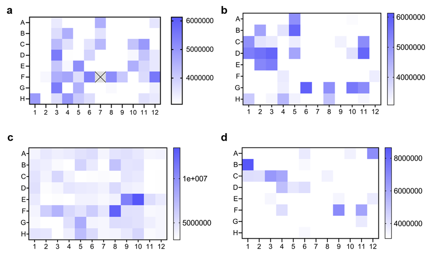

Methods
Error-prone PCR library construction
The linearized vector and MjTYR-Gen2 fragment were obtained by PCR on the Gen 2 plasmid using primers (Vector-F, Vector-R, Gen 2-F, Gen 2-R). Using the error-prone PCR kit purchased from Gene-star company with (template
plasmid 1, 2×StarMut Random PCR Mix 10, Gen 2-F, Gen 2-R 1 each, Star Mut enhancer 6,sterile water 1, 53.1℃) conditions for error-prone PCR on MjTYR-Gen2 fragments. The PCR products were verified by electrophoresis
and purified usinga kit purchased from Vazyme. The linearized vector and error-prone PCR fragments were then subjected to homologous recombination using homologous recombination reagents purchased from Vazyme. The recombinant
plasmid was transformed into C321-sfGFP-Y66DOPA-S205C spread on 1.5% agar LB medium plates containing 10 μg/ml bleomycin and 10 μg/ml chloramphenicol.
Construction of site-directed mutagenesis library
Three pairs of degenerate primers (IUBcode) were designed to randomly introduce mutations (wild type or desired residues or others) on four sites in gen 2, in which A67&H70 were too close to be combined to one fragment.
The whole pBAD33-gen2-Angew tRNA plasmid was divided into three parts and then amplified by three pairs of degenerate primers and 2 × Phanta Max Master Mix (Dye Plus) (Vazyme Biotech Co.,Ltd). The consequent three fragments
with randomly introduced mutations were then combined with ClonExpress MultiS One Step Cloning Kit (Vazyme), which is a cloning kit based on homologous recombination. E.coli C321 with pET28a-GfpS205C were used for subsequent
chemical transformation.
Mutation rate determination
Some transformants were randomly selected from the mutant library and cultured in 5 mL LB liquid medium at 37℃ and 200 rpm for 48 h.Plasmids were extracted using a plasmid extraction kit from Vazyme. The resulting plasmids
were sent to General Biol for sanger sequencing of the error-prone PCR-processed fragments to calculate the average mutation rate.
Construction of plasmids
We constructed SP plasmid through Golden Gate assembly. For Golden Gate assembly, SapⅠ(New England BioLabs）acted as IIS restriction endonuclease and T4 DNA ligase(New England BioLabs）. Assembly contained 3-5 ng/kb/µL
donor plasmids and 1-3 ng/kb/µL receptor (splitC and splitD). And it experienced thermal cycles (37℃ for 5 min,16℃ for 5 min,30 cycles,60℃ 5 min,4℃）. After this process, assembly was transferred into S2208 competent cells according to the clone methods
of SP plasmid.
Cloning and amplication of plasmids happen in the DH5α competent cells (Vazyme Biotech Co.,Ltd).Vazyme plasmid extraction kit was used for isolation of plasmids. All the recombinant plasmids constructed by PCR were sequenced and tested through Sanger
sequencing. Plasmids constructed by Golden Gate assembly were also completely sequenced and tested. Homologous recombination was used to construct the AP and CP plasmids. Assembly was put into homologous recombination
enzyme system (Vazyme Biotech Co.,Ltd), 37℃, 30 min.
Transformation and storage of competent cells and strains prepared by chemical methods
Luciferase assay, phage propagation experiment and PACE were operated in the strain S2060. Competent cells are prepared by the method below. The saturated S2060 solution was added to a conical flask containing 2 x YT liquid medium (Solarbio) with appropriate
antibiotics and diluted 100 times. The flask was then incubated in a shaker at 37℃ at 200-300 rpm/min until the OD600 of the bacterial solution was 0.4-0.6. Then we put it in the biological shaker at 200-300 rpm/min,
37℃, until the OD600 of the solution became 0.4-0.6. We took and centrifuged 50 mL bacterial solution in the centrifugal tubes at 6500 rpm, 4℃ for 10 min. Discard the supernatant, and add 2 mL cold liquid LB and 2 mL
cold 2×TSS (MgCl2, PEG 3350 and DMSO were added to LB medium at final concentrations of 20 mM, 10% and 5% respectively). Then, we froze the competent cells in the liquid nitrogen after mixing and dispensing them in
the tubes and stored at -80℃.
As for transformation, 100 μL competent cells defrost on the ice; add pre-cooled plasmid mixture (each kind of plasmids should
< 100 ng; 3 kinds of plasmids can be transferred at most) and 100 μL 1×KCM(KCl, CaCl2 and MgCl2 were added to LB medium at final concentrations of 100 mM, 30 mM and 50 mM respectively). Put it on the ice for 10 min after being mixed thoroughly, heat shock
at 42℃ for 75 s; put it on the ice for 2-3 min; add 500 μL SOC solution in it and put it in the biological shaker at 200-300 rpm/min for 1h; centrifuged the bacterial solution at 8000 rpm for 2min, discard the supernatant;
plate the bacterial solution on the 2×YT solid culture (1.5% agar) with proper antibiotics after the bacterial solution being resuspended; culture at 37℃ for 16-18 h. A saturated bacterial solution containing the appropriate
antibiotic is mixed in equal proportions with sterile glycerol and stored frozen at -80℃.
Cloning of SP
In the above transformation step, the above plasmids were replaced with a mixture product of assembled SP plasmids, heat shocked for 75 s, left on ice for 2-3min, and then the cell mixture was directly diluted into
10ml of antibiotic-free 2×YT liquid medium at 37℃ for 16-18 h at 200-300 rpm/min on a biologicalshaker. 2mL of bacterial solution was put into a centrifuge tube and centrifuged at 8000g for 3min. The supernatant
was collected and filtered in a 1ml syringe (Nanjing Dingbei Biotechnology co., LTD.) equipped with a 13mm, 0.22 μm PVDF filter (Nanjing Dingbei Biotechnology co., LTD.) to obtain the phage stock solution and
stored at -4℃.
Isolation of monoclonal phages
Gently touch the plaque with the tip of a P10 pipette. Place the pipette tip into 2-3 mL of DRM, grow for 16-20h in a biologicalshaker at 37℃. Centrifuge at 8000 g for 2 min. The supernatant was collected and filtered in a 1 ml syringe equipped with a
13mm 0.22 μm PVDF filter to obtain a phage stock solution.Its concentration was determined using an activity-independent phage plaque assay. POI fragments can also be amplified by PCR for sequencing.
Activity-dependent phage propagation
S2060 saturated bacterial solution transformed with AP/CP was diluted 1000 times into DRM medium containing appropriate antibiotics, and the culture was shaken at 37℃ until OD600 was 0.4-0.6. Cells were infected with phage at a starting titer of approximately
104 PFU /ml and incubated at 37℃ for 16-20h on a biologicalshaker. Centrifuge at 8000g for 3min. The supernatant was collected and filtered in a 1ml syringe equipped with a 13mm 0.22μm PVDF filter to obtain
phage stock solution, which was stored at -4℃.
Purification of SP plasmids
Using a P1000 pipette tip, Agar sections containing individual plaques were punched out and resuspended in 2ml of DRM without antibiotics. The cells were incubated in a biological shaker at 37℃ for 6-8 h or until
mid-exponential stage (OD600 0.2-0.8). The cells were centrifuged at 8000 g for 2 min. The phage stock solution was obtained by collecting and filtering the supernatant in a 1ml syringe equipped with a 13mm,
0.22 μm PVDF filter. Phage titers were determined using an activity-independent phage plaque assay.
Modeling and MD simulation
The structures of Gen 2 and Mutpre were modeled by AlphaFold2. The simulations were conducted on an cloud server (Beikunyun cloud supercomputing platform). Then the model ranked highest (pLDDTGen 2 = 92.4, pLDDTMutpre
= 92.1) were chosen for the subsequent molecular dynamic simulation (MD simulation). The MD simulation were achieved by Gromacs,which is free MD simulation tool. Among the steps of MD simulation, energy minimization,
ensemble equilibration and final MD simulation were run on cloud server (Beikunyun cloud supercomputing platform),and other steps were completed on local computer. In the simulation, force field was OPLS-AA/L
all-atom force field (2001 aminoacid dihedrals) and water force field was SPC/E water force field.
Note
Note. S1 Construction of the selection plasmid (SP)
The construction of SP is undoubtedly a big challenge during the establishment of PACE pathway. At first, we used wild-type M13 phage as the template to remove the gⅢ by PCR to obtain the vector. Then, the vector, TyrRS
gene fragment and artificial RBS sequence were linked by homologous recombination. Then, phage genomes assembled were transformed into S2208 cells through the SP cloning method, and finally the reconstituted phage stock
was obtained. SP stock was used for activity-independent phage plaque assays. After large amount of plaque verifications, we found that the quadrate plates were almost entirely plaques formed by wild-type M13 phages.
Later, we attempted to add DpnⅠto remove wild-type M13 phages during homologous recombination. Although a part of wild-type M13 phages can be eliminated, the remaining wild-type M13 phages can propagate rapidly in the subsequent
culture and dominate.
USER cloning is one way of constructing plasmids. Primers were designed to include a single internal deoxyuracil base 15–20 bases from the 5’ end of the primer and begin with a deoxyadenosine and end with a deoxythymine.
Liu and co-workers used the USER cloning to construct SP and evolved Bacillus thuringiensis toxins to overcome the resistance of insects
1. Inspired by it, we also used this method to construct SP, and added DpnⅠ(New England Biolabs Inc., USA) into the reaction system of USER enzyme (New England Biolabs Inc., USA). It is hoped that DpnⅠ can
remove more wild-type M13 phage templates in rCutSmart buffer (New England Biolabs Inc., USA). However, the results showed that even if a small amount of wild-type M13 phages would propagate rapidly and dominate in
subsequent culture.
Since S2060 cells are modified from DH10β cells to be infected by M13 phage2. DH5α cells were not modified, so it could not be infected by M13 phage. Based on this reason, we tried to split M13 backbone without
gⅢ gene into two plasmids, as donor plasmids and then replace gⅢ in the AP-T7P plasmid with target gene, as acceptor plasmid3. To further eliminate wild-type M13, donor and acceptor plasmids were transformed
into DH5α cells, respectively. Positive clones without wild-type M13, were selected and the plasmids were extracted after overnight culture. Then the extracted recombinant plasmids were transformed into DH5α cells again,
and the above steps were repeated until wild-type M13 were completely diluted and disappeared. Finally, SP was assembled by purified donor and acceptor plasmids, SP was transformed into S2208 cells according to SP cloning
method to obtain recombinant phage. Although this method is feasible, it is too complex. In order to remove wild-type M13, it often takes 4-5 transformation steps to remove wild-type M13. And multi-fragment homologous
recombination often greatly reduces the success rate.
It is reported that Liu and co-workers constructed two plasmids, pBT29-SplitC and pBT29-SplitD4, by splitting the M13 backbone without gⅢ into two plasmids, as acceptor plasmids4. In order to improve the
success rate, we used the above plasmids and constructed the donor plasmid, AP-TyrRS-P by In-fusion. The three plasmids were assembled into SP by using the Golden Gate method. We anticipate that this will be a feasible
and successful method.
Note. S2 Some unexpected phenomena
During the experiment, we encountered some unexpected phenomena. In the transformation and screening process, we found that the bacterial solution was orange, visible to the naked eye. Sequencing found that the arabinose operon sequence mutated, so we
speculate that structural alterations in the AraC protein cannot play a depressive role, allowing sfGFP to be overexpressed.
Figure. S1 Bacterial solution was orange, visible to the naked eye after centrifugation
Figure. S2 Some strains are visible orange after being induced and cultured for about 8 hours.

Figure. S3 Heatmap of partial mutation library (orange).

Figure. S4 Heatmap of partial mutation library (green).
Note. S3 Modeling and MD simulation
The structures of Gen 2 and Mutpre were modeled by AlphaFold2. The simulations were conducted on an cloud server (Beikunyun cloud supercomputing platform). Then the model ranked highest (pLDDTGen 2 = 92.4, pLDDTMutpre = 92.1) were chosen for the subsequent
molecular dynamic simulation (MD simulation). The MD simulation were achieved by Gromacs, which is free MD simulation tool. Among the steps of MD simulation, energy minimization, ensemble equilibration and final MD
simulation were run on cloud server (Beikunyun cloud supercomputing platform), and other steps were completed on local computer. In the simulation, force field was OPLS-AA/L all-atom force field (2001 aminoacid dihedrals)
and water force field was SPC/E water force field.